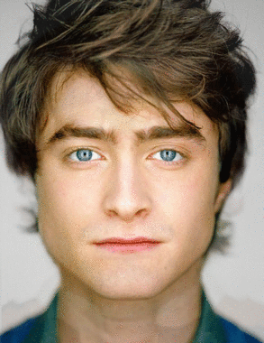

Overview
In this project, we first use image shape warping to morph faces by warping their structure and shape. Then, to get the right colors, we cross dissolving to produce the resulting morphs of faces. We can produce a sequence by morphing the faces at different fractions and tie them together into an animated version.
Defining Correspondences
First, for each of the two images that will be morphed, we define corresponding key points. Then, using these faces, we provide a Delaunay triangulation in order to map corresponding triangles from both images for later image shape warping.
Computing the "Mid-way Face"
Computing the "mid-way" face involves computing the average points between each pair of points in both images, warping both faces into the shape of the midway, which is defined by the midpoints, and averaging the colors. Computing the average points is just taking the midpoint of the pair of corresponding points. The image shape warping involves computing the affine transformation matrix by using two matrices composed of the set of 3 points defining the triangle we are trying to morph from and the set from the triangles we are trying to morph to. Using this matrix, we can map the pixels in the result from the image we morphed from. After generating the two image shape warped images, we can blend the colors between them by adding them each with half the instensity of each color.
The Morph Sequence
In this part, we generate a sequences of images in order to show the morphing sequences. Instead of the midpoint of the pairs of points, we can weight the distance from each point using the fraction of the frame in the morphing sequence. Using this, we continue to trianglate and image shape warp the same way as before. As for the cross-dossolving, we just weight the intensity of colors by the fraction of the frame in the morphing sequence. The results are shown below, with the video being the actual deliverable.
|  |
The "Mean face" of a population
I chose to average the faces of 30 males from the IMM Face Database. The image type I chose was the full frontal face with a "happy" expression and difuse light.
Credits: M. B. Stegmann, B. K. Ersboll, and R. Larsen. FAME - a flexible appearance modelling environment. IEEE Trans. on Medical Imaging, 22(10):1319{1331, 2003
Average face shape of the male population
Morphed into the average shape

|
|||

|
Average face of the population
|
|
Caricatures: Extrapolating from the mean
Here is my face morphed with the male population average and extrapolated from it by weighting in the opposite direction.
|
|
|
|
|
Bells and Whistles
This is my friend Isabel Zhang being morphed from a smily happy Isabel to a frowning one.
|
|
|
|
|
|
|
|